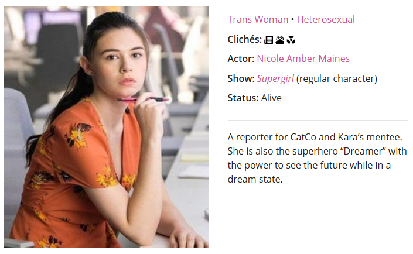
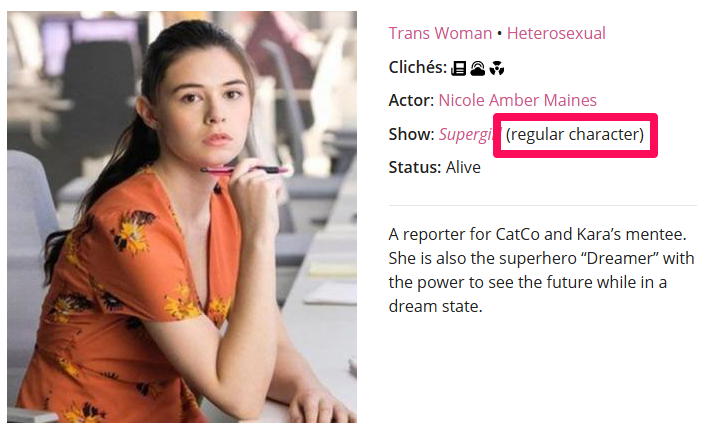
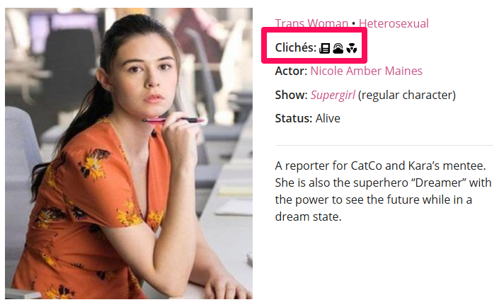
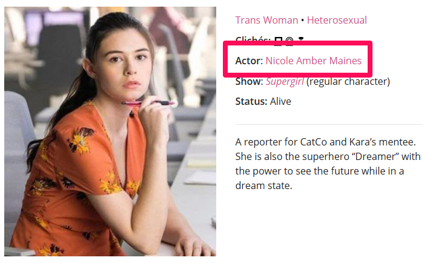
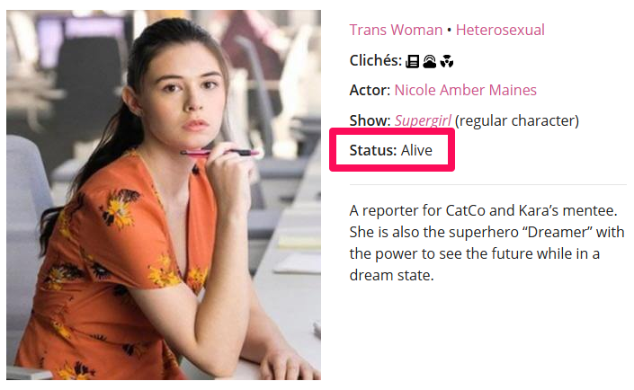
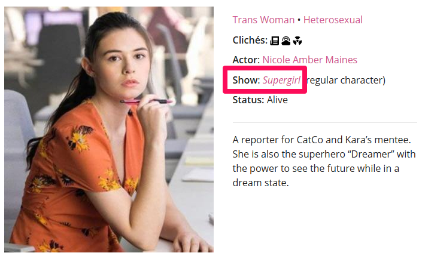
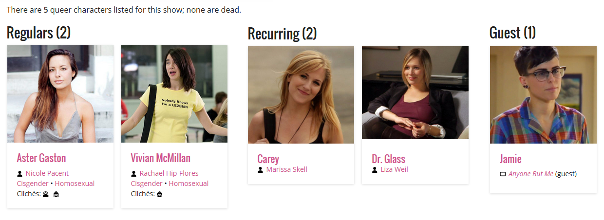
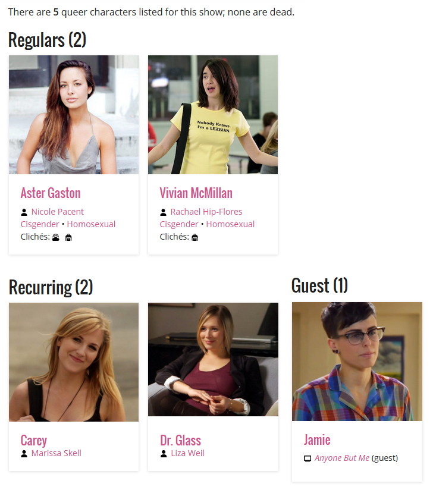

LezWatch.TV Show Scoring
Show scoring and how scores are generated explained
Show Scores
A mathematically generated score from 0-100 to identify shows that are ‘better’ for queer audiences than others.
Show Scores

One Mississippi
How are Scores Generated?
Four subject areas
Four subject areas

Four subject areas

Four subject areas

Four subject areas

Each can earn 0 - 100 points
 0 - 100 points
0 - 100 points 0 - 100 points
0 - 100 points 0 - 100 points
0 - 100 points 0 - 100 points
0 - 100 points
Example with points
- 50 points
- 60 points
- 70 points
- 80 points
Add up the points
- 50 points
- 60 points
- 70 points
- 80 points
Total number of points: 260
Divide the total number by 4
- 50 points
- 60 points
- 70 points
- 80 points
260 ÷ 4 = 65
Final Score
- 50 points
- 60 points
- 70 points
- 80 points
The Final Score is 65
How Points are Earned

Ratings
Ratings
- Heart Ratings

- Worth Watching

Stars

- Trigger Warnings

Show we Love

Heart Ratings
- Heart Ratings
-
= 1 point
- Realness 0 - 5 Points
- Quality 0 - 5 Points
- Screentime 0 - 5 Points
Heart Ratings
- Heart Ratings
-
= 1 point
- Realness 4 Points
- Quality 4 Points
- Screentime 5 Points
= 13 Points
Heart Ratings
- Heart Ratings
-
The sum of points are
multiplied by 3.13 x 3 = 39
39 Total Points
Is it Worth Watching?
- Worth Watching
-
- = 10 Points
- = 5 Points
- = -10 Points
Stars
- Stars
-
- Gold = 20 Points
- Silver = 10 Points
- Bronze = 5 Points
Trigger Warnings
- Trigger Warnings
-
- Low -5 Points
- Medium -10 Points
- High -15 Points
Show We Love
- Show we Love
-
+40 Points!
Character Survival Rate
Character Survival Rate
0 - 100 points based on the percentage of living queer characters.
Person of Interest
There are 4 queer characters listed for this show; 1 is dead.
75% of queer characters alive = 75 Points
Character Scores
Character Scores
What factors into the character score?

What factors into the character score?
- 
-
Role:
Are they a Regular, Recurring or Guest Character?
What factors into the character score?
- 
-
Clichés:
Do they have zero clichés?
What factors into the character score?
- 
-
Queer Representation:
Is the queer character being played by an out queer actor?
What factors into the character score?
-
Transgender Representation:
If the character is transgender, are they being played by an out transgender actor?
What factors into the character score?
- 
-
Death:
Are they alive or dead?
What factors into the character score?
- 
-
Show Type:
Is the show the character is on a series, webseries or movie?
Calculating the character score
Anyone But Me

Calculating the character score
- 
-
Roles:
- Number of Regular Characters x 5
-
+
Number of Recurring Characters x 2 -
+
Number of Guest Characters
Calculating the character score
-
Roles:
- Regular Characters: 2 x 5 = 10
-
+
Recurring Characters: 2 x 2 = 4 -
+
Guest Characters: 1
Calculating the character score
-
Roles:
- 10 + 4 + 1
- = 15
-
Total Role Score: 15
Calculating the character score
-
Clichés / Representation:
- Characters with zero clichés x 5
-
+
Characters played by out queer actors x 10 -
+
Transgender Characters played by out transgender actors x 10 -
+
Transgender Characters played by cis actors x -5
Calculating the character score
-
Clichés / Representation:
- Zero clichés: 0
-
+
Queer actors: 2 x 10 = 20 -
+
Transgender actors: NA
Calculating the character score
-
Clichés / Representation:
- 0 + 20
- = 20
-
Cliché / Representation Score: 20
Calculating the character score
-
Death:
A show loses 3 points for every dead queer character.
Calculating the character score
-
Death:
No one is dead
Death Score: 0
The character score formula
Role Score + Cliché/Representation Score - Death Score
The character score formula
15 + 20 - 0 = 35
Character Score: 35
The show type curve
A show's overall character score is adjusted based on the type of show it is
- Made for TV Movies: Character Score ÷ 2
- Mini Series: Character Score ÷ 1.5
- Web Series: Character Score ÷ 1.25
The show type curve
Web Series: Character Score ÷ 1.25
35 ÷ 1.25
Final Character Score: 28
Show Tropes
Show Tropes
What factors into the show trope score score?
First we put our tropes into categories.
Trope Categories
- None
Zero Tropes
- Good
Happy Ending,
Everyone’s Queer
- Maybe
Coming Out, Big Queer Wedding
- Ploy
Erased Queerness, Happiness then Tragedy, Subtext Only, Queer For Ratings, Queer for Laughs
- Bad
Big Bad Queers, Prison, Queerbaiting, Queerbashing
- Regular
Everything else
Zero Tropes
Happy Ending,
Everyone’s Queer
Coming Out, Big Queer Wedding
Erased Queerness, Happiness then Tragedy, Subtext Only, Queer For Ratings, Queer for Laughs
Big Bad Queers, Prison, Queerbaiting, Queerbashing
Everything else
Calculating the trope score
None
If a show has no tropes at all.
Trope Score: 80
Calculating the trope score
All other shows go through a trope score formula.
- The Number of Good and Maybe Tropes
- - The Number of Ploy and Bad Tropes
- ÷ the total number of tropes (excluding regulars)
- x 100 = Trope Score
The trope score formula
Example: A show with happy tropes
- 2 Good and 1 Maybe = 3
- - 0 Ploy and 0 Bad = 3
- ÷ 3 Tropes total (excluding regulars) = 1
- 1 x 100 = 100
Trope Score: 100
The trope score formula
Example: Big Queer Wedding but for ratings
- 2 Good and 1 Maybe = 3
- - 1 Ploy and 0 Bad = 2
- ÷ 4 Tropes total (excluding regulars) = 0.5
- 0.5 x 100 = 50
Trope Score: 50
The trope score formula
Example: A show with bad tropes
- 2 Good and 0 Maybe = 2
- - 2 Ploy and 2 Bad = -2
- ÷ 6 Tropes total (excluding regulars) = -0.33
- -0.33 x 100 = -33.3 rounded to 0
Trope Score: 0
The Bury Your Queers Penalty
If a queer character is killed,
the show loses 1/3 of its trope score.